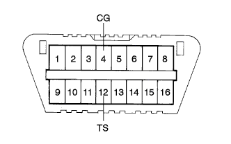
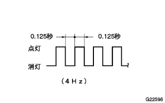
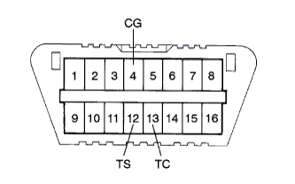

ABS & BA system (4WD) test mode with EBD |
Test mode startup method (TASCAN)
IG Switch off.
Connect SST (Tascan) to DLC3.
Turn on IG switch.
Follow the SST (Tascan) display screen to switch to test mode.
|  |
Test mode startup method (DLC3 short circuit)
IG Switch off.
Use SST to short circuit between 12 (TS) ← → 4 (CG) of DLC3.
Turn on IG switch.
|  |
Test mode display confirmation
After the ABS Warnin Grand Lamp is turned on for a few seconds, the transition to the test mode by switching to pulse blinking.
| DLC3 | IG switch ON | IG switch off | IG switch OFF → ON |
|---|---|---|---|
| TS-CG terminal short circuit | Maintaining memory | Maintaining memory | Maintaining memory |
| Opening between TS-CG terminals | Maintaining memory | Maintaining memory | Memory erasure |
Deceleration sensor chaeck
Turn on IG switch.
Make the shift lever in a P range and stop at a flat place for 1 second or more.
Speed sensor chak
Start without wheel spinning on the handle straight, speed up to 45 km/h or higher, and confirm that the ABS Warning Lamp will turn off.
End of sensor chak
If the sensor chaeck is finished successfully, the lighting state of the ABS Warnin Grand lamp will blink while the vehicle is stopped (test mode display) and turn off during vehicle driving.
Test mode code reading (Tascan)
Read the test mode code according to the SST (Tascan) display screen in the test mode.
|  |
Test mode code reading (DLC3 short circuit)
IG Switch off.
With a SST, the DLC3 12 (TS) ← → 4 (CG) terminal is short -circuited, and the 13 (TC) ← → 4 (CG) terminal is short -circuited.
Turn on IG switch.
Read the number of flashes of ABS Warnin Grand lamps.
Open between 12 (TS) ← → 4 (CG) of DLC3.
Test mode termination method (TASCAN)
Switch from test mode to normal mode according to the SST (Tascan) screen display.
Turn off the SST (Tascan) by turning off the IG switch.
Test mode termination method (DLC3 short circuit)
IG Switch off.
Open between 12 (TS), 13 (TC) ← → 4 (CG) of DLC3.
Turn on IG switch.
| Code number [SAE/lamp] | Diagnostic content | Judgment content | Inspection item |
|---|---|---|---|
| C1271/71 | SPD FR output voltage abnormality | Judgment of foreign substances, gaps between the sensor and the rotor |
|
| C1272/72 | SPD FL output voltage abnormality | Judgment of foreign substances, gaps between the sensor and the rotor |
|
| C1273/73 | SPD RR output voltage abnormality | Judgment of foreign substances, gaps between the sensor and the rotor |
|
| C1274/74 | SPD RL Output voltage abnormality | Judgment of foreign substances, gaps between the sensor and the rotor |
|
| C1275/75 | SPD FR output cycle | Judgment of stability of sensor input waveform |
|
| C1276/76 | SPD FL output cycle | Judgment of stability of sensor input waveform |
|
| C1277/77 | SPD RR output cycle unusual | Judgment of stability of sensor input waveform |
|
| C1278/78 | SPD RL output cycle abnormality | Judgment of stability of sensor input waveform |
|
| C1279/79 | G sensor (deceleration sensor) Output voltage abnormality | Detect G at the time of vehicle horizontal station and judge |
|